OCTACHRON Manual
Table of Contents
- Connecting OCTACHRON
- Presets Menu and MIDI Mapping
- Standalone Controls
- Step Editing Grid
- Smart Randomizer and Mutation
- Track Settings
- Modulation
- Mutation of CC Parameters
- Song Mode
- Sequencer Settings
- External Control via MIDI
Connecting OCTACHRON
Use OCTACHRON standalone via MIDI
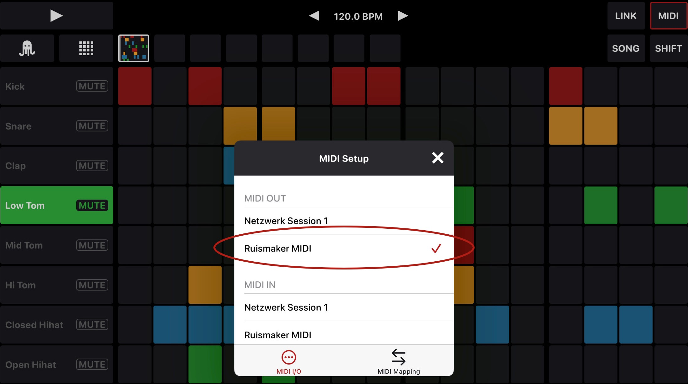To use OCTACHRON in standalone mode please first start the instrument app you want control with it (Ruismaker in this example). Or if it is a piece of hardware, connect it to your iPad or iPhone via a MIDI/USB cable. In OCTACHRON then press the button “MIDI” in the top right and select your instrument under “MIDI OUT”. Then continue with the chapter MIDI Mapping below.
Use OCTACHRON in AUM
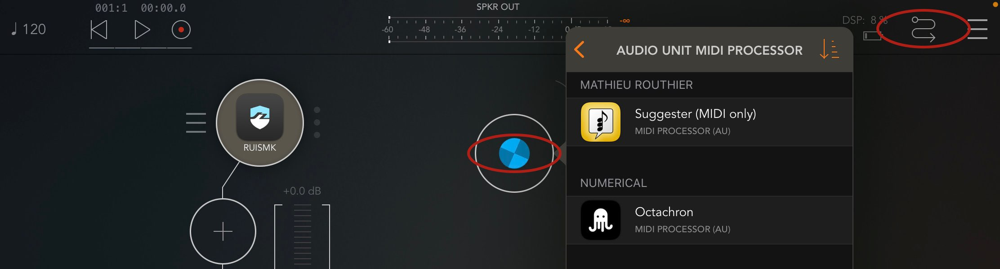
In AUM just create a MIDI track, go to „Audio Unit MIDI Processor“ and select OCTACHRON from there.
Then press the curved arrow icon in the top right.
Connect the audio instrument you want to control via the MIDI routing dialogue. Then continue with the chapter MIDI Mapping below.
Use OCTACHRON inside Cubasis, Logic Pro or other iOS DAWs

Inside a DAW please first select the track with the instrument you want to control with OCTACHRON. Open “MIDI Effects” there, tap on “Tap to Add Effect” and select OCTACHRON. Then continue with the chapter MIDI Mapping below.
Presets Menu
User Presets
Load and save pattern presets and songs you created. Also export presets and MIDI files for use across devices.
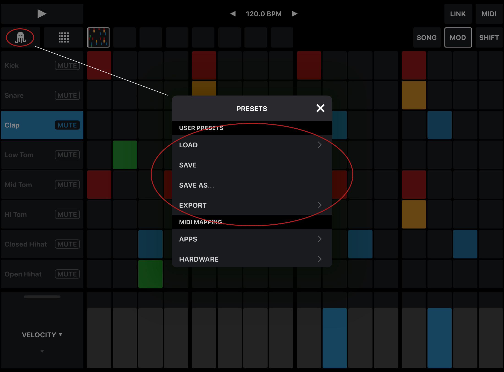MIDI Mapping
Map your tracks to the MIDI notes your instrument uses.
Apps
Load one of the many mapping presets we created for several iOS drum machines.
Hardware
Load one of the many mapping presets we created for several hardware drum machines.
Custom
Load any mapping preset, that you saved yourself with the SAVE functionality below. You can also share every preset from here.
Customize
Create your own MIDI mapping.
This duplicates the functionality from the track and modulation settings and gives you an overview of the whole mapping.
Generate Scale
Generate note scales for melodic instruments.
Save Mapping
Save the current MIDI mapping settings as a new mapping preset. It will then appear under CUSTOM. You can find a nice overview of the current MIDI mapping in the CUSTOMIZE menu.
Global Track
A few MIDI mapping presets also contain an additional track labled "Global", e.g. the Korg Gadget Gladstone preset. You can use these tracks to control global CC values of that device. For that purpose you can either fill the hole track with steps or activate the option CC ON EVERY STEP in the Sequencer Settings.
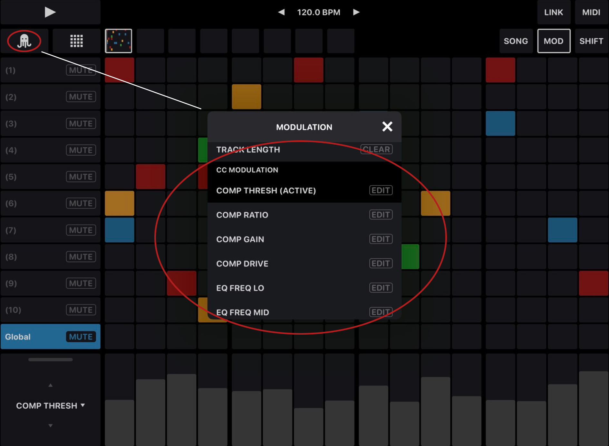NUMBER OF TRACKS AND HIDING THEM
By default every MIDI Mapping preset comes with the number of tracks this drum machine typically uses. By pressing SHIFT and the eye icons though, you can hide tracks you do not need. And if that is still not enough, you can also customize the absolute number of tracks and their appearance via the Sequencer Settings.
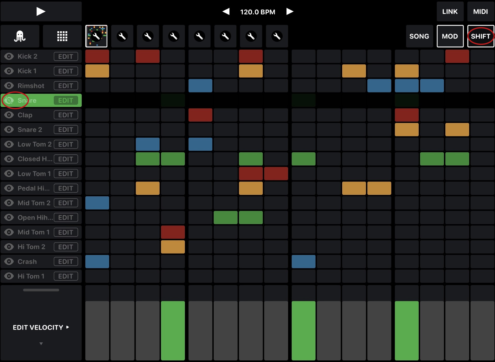Standalone controls
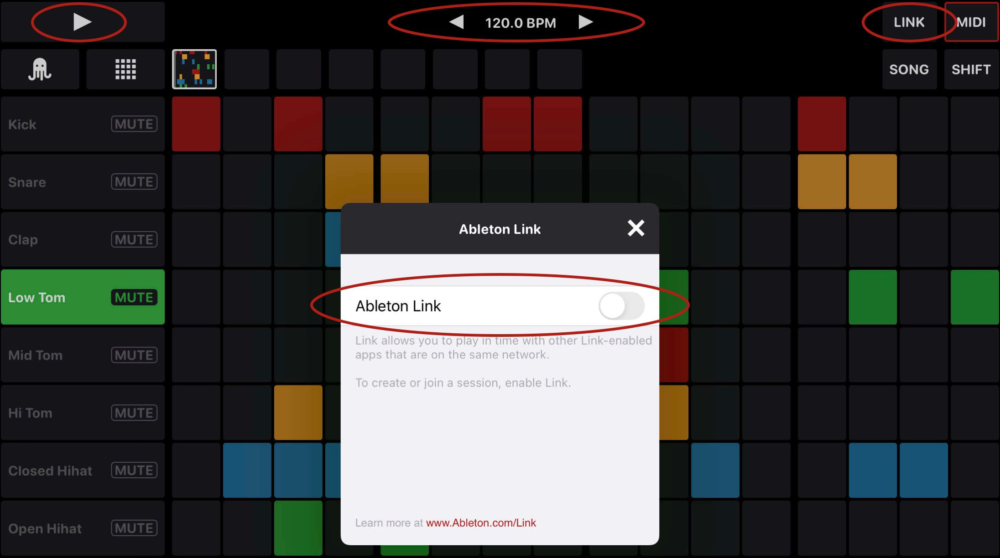
Play/Stop
Plays and stops the sequencer. Patterns are always played from the beginning.
BPM
Just swipe the BPM control left and right to adjust full BPM steps. Tap on the arrows to adjust the decimals. Or just tap on the number to put in the BPM numerically.
Link
Synchronizes OCTACHRON to other instruments in your network via Ableton Link.
Step Editing Grid
The step editing grid features 1 to 16 tracks. Each track controls a drum voice or an instrument note. And it can be addressed separately by MIDI note and channel.
Grid View
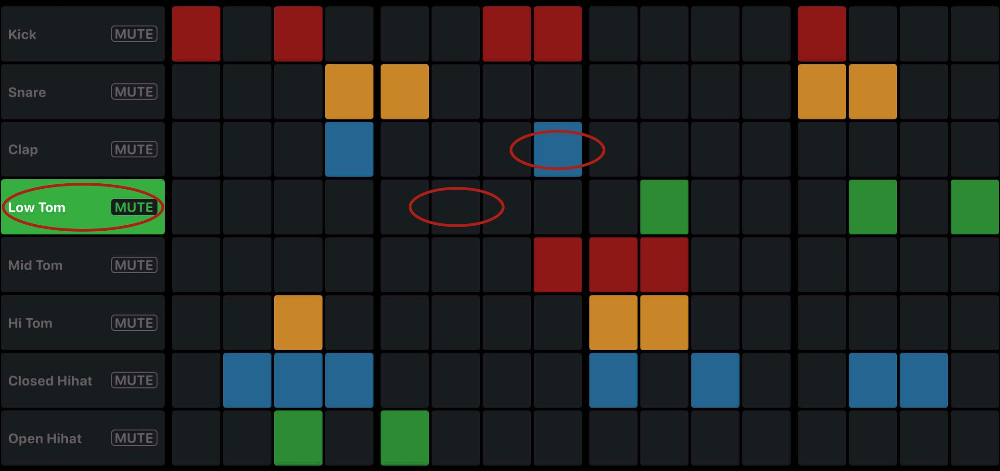Just tap on the steps to set and delete them. You can also set several steps on a track by swiping over them. By setting a step on a track, you also select this track for modulation. You can also select a track by tapping on the left column of it. And you can also mute each track with the mute button.
Smart Randomizer and Mutation

Tap and hold on an empty or already filled pattern alias and tap on “Smart Randomize”. Via a smart algorithm OCTACHRON will create a random new pattern, which is based on a standard house groove. Just tap “Smart Randomize” again to get a new pattern.
Randomizer Settings
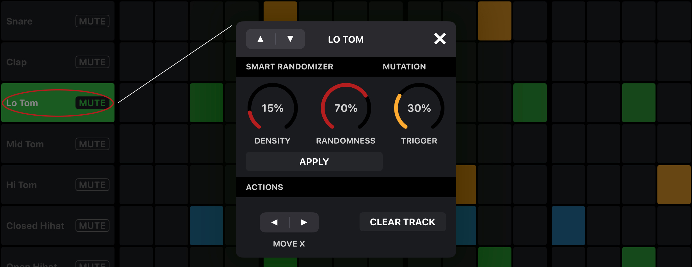Via long press or shift + tap on the left column of a track you can adjust the randomizer settings for each drum voice or instrument note. You can go back to the pattern overlay again then and press "Smart Randomize" for a whole new pattern. Or you randomize each track by hitting "Apply" here.
Density
Adjusts the amount of randomly set steps per track.
Randomness
Defines how much randomness is introduced to each track. It is ranging from more 4-to-the-floor rhythmical to complete random, always respecting the density parameter.
Mutation
Randomly plays additional steps in your track and randomly leaves some steps out.
(This duplicates the probability setting in an even easier and intuitive way. Though if you want absolute control, you can still use the probability setting.)
Track Settings
Via long press or shift + tap on the left column of a track and scrolling down a little, you also find more settings.
Move X
Moves steps of this track on the X axis.
Clear Track
Deletes all steps set on this track.
Settings
Sets the name of this track, its clock divider, MIDI note and channel and sends a test note to check if it works right.
Modulation
Modulation is another key feature of OCTACHRON. Just tap on a track to select it for modulation. On the bottom of the screen you will then find its modulation view.
To use the interface more efficient, you can show and hide the modulation panel via the “MOD” button in the top right and also customize its size with its handle on the bottom left.
Tap on the dropdown on the buttom left to open up the modulation selector. Just tap anywhere on an entry to select it.
On the right then set the amount of each modulation parameter for each step.
Basic Step Modulation
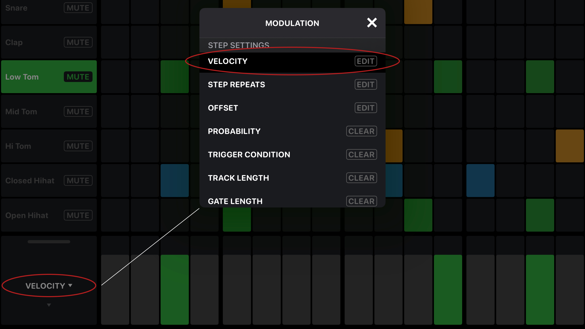
Set velocity, step repeats, offset, probability, trigger condition, track length and gate length for each step.
“Trigger Condition” only triggers the step of a repeating pattern, that is set here. So for example “1./2” only plays the first set step within two repeats. “2./3” only plays the second one within three repeats and so on. This is useful for example, if you want to create little variations of a pattern without having to create a complete new one.
Track length allows you to change the length of each track independently from the others and create polyrhythms.
By pressing SHIFT while dragging one of the controllers, you can adjust the value for all steps together.
CC Modulation

CC Modulation shows the parameters that your specific instrument allows you to modulate. To select a CC parameter for modulation, just tap on it. Also make sure to activate it to apply the modulation. If you make changes to a parameter, it is activated automatically.
Again by pressing SHIFT while dragging one of the controllers, you adjust the value for all steps together.
Mutation of Modulation Parameters
And to go even one step further, OCTACHRON also allows you to let velocity, step repeats, offset and all CC Modulation parameters mutate:
Mutation of Velocity, Step Repeats and Offset
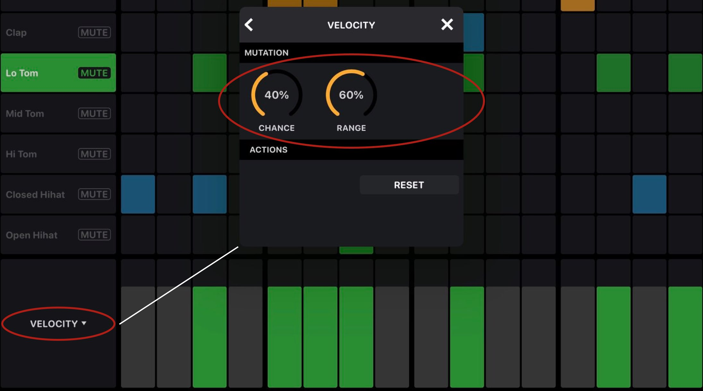Mutation of CC Parameters
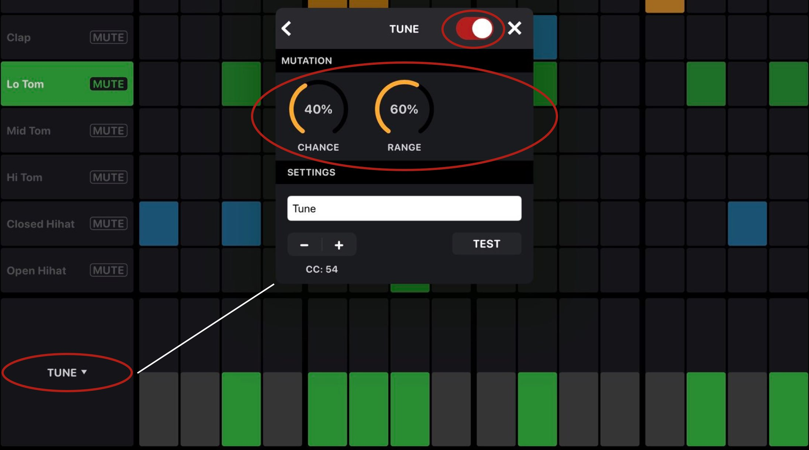
Just tap on edit on each modualtion parameter or long press on the selected dropdown value in the bottom left to call up the edit dialogue.
Here you can easily set the mutation chance and range for each parameter.
Also use the edit dialogue to reset your basic step modulations, to change CC addresses and names and to activate or deactivate your CC Modulations with the toggle in the top right.
Song Mode
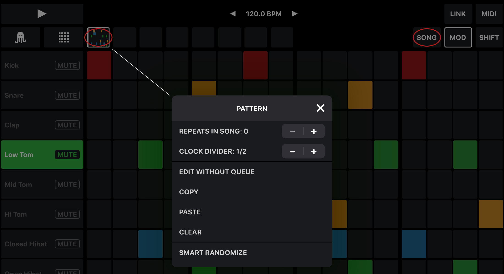Above the step editing grid you find the song mode. You can chain up to 8 patterns there, multiply them and change their order. Activate the song mode with the “SONG” button on the top right. The patterns are now played according to their current order and set number of repeats. By tapping on a pattern alias you select it for editing and make it play next. Via long press on an alias or shift + tap you get the pattern tools dialogue. Via drag and drop you can change the order of the patterns, also while the song is already playing.
Pattern Tools
- Set number of pattern repeats in song mode
- Set clock divider per pattern
- Copy pattern
- Paste pattern
- Clear pattern
- Create a random pattern (Also see chapter Smart Randomizer and Mutation)
- Move steps of a pattern on the X and Y axis
Sequencer Settings
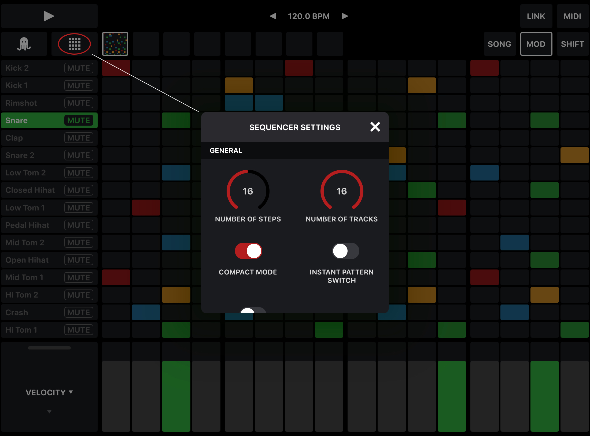Tap on the grid icon to call up the sequencer settings.
Number of Steps (1-32)
Globally sets the number of steps of your patterns. The default number is 16.
NUMBER OF TRACKS (1-16)
Sets a custom number of tracks. Default is 8 or the default number of your loaded MIDI mapping preset.
COMPACT MODE
Makes your grid appear more compact and less likely to scroll. It is activated by default. But if you need bigger grid tiles, just deactivate it.
Instant Pattern Switch
Makes the pattern change instantly, when you cue it manually - as opposed to the default setting, where the sequencer waits until the last pattern has finished playing.
CC on every step
If activated, instead of sending CC messages only when sending actual MIDI notes, OCTACHRON will then also send CC messages without any active steps. This comes in handy, if you want to control an instrument parameter without sending a note.
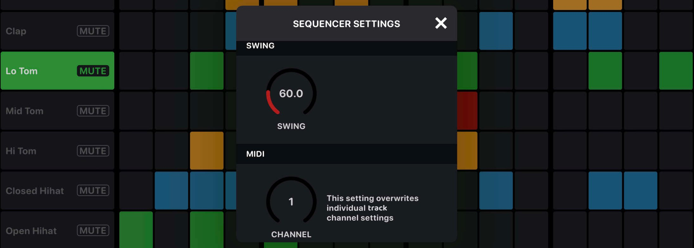
Swing (50-100%)
Globally sets the amount of swing for all tracks and patterns.
MIDI
Sets one global MIDI channel, which overrides all individual channel settings.
External Control via MIDI notes
standalone and as AUv3
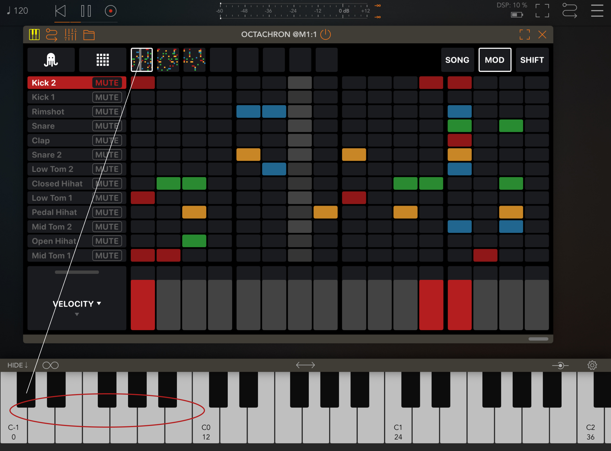
OCTACHRON
can also be controlled via external MIDI messages (notes). You can activate (start/stop) the whole sequencer or single patterns. And you can mute/unmute single tracks.
This page shows the MIDI notes you have to send to trigger each function.
Active
Starts/stops OCTACHRON altogether. So if Active is off, OCTACHRON will not send any MIDI messages.
Activate Pattern
Controls starting/stopping patterns using MIDI notes.
Mute
Controls muting/unmuting individual tracks.